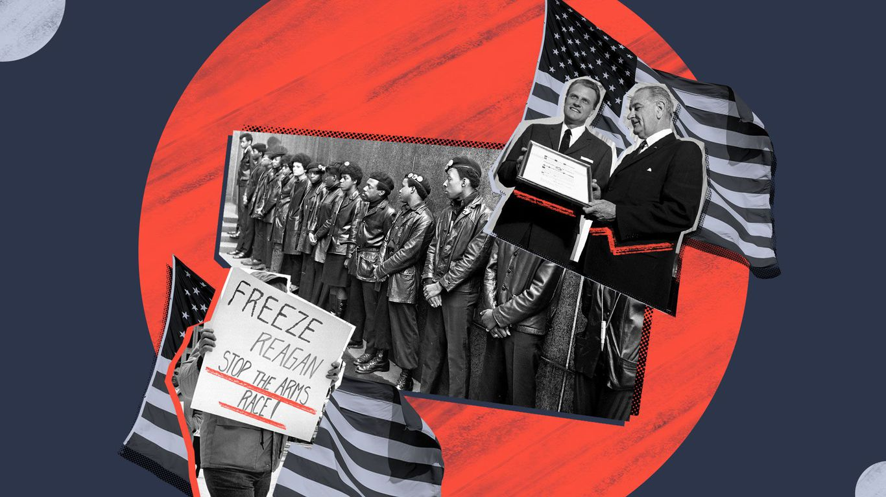
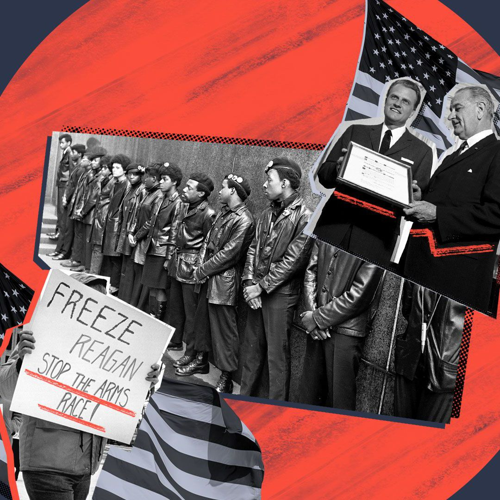

Race, Politics and Influence in America
America is more racially and ethnically diverse.But structural barriers keep people of color from gaining the political power that reflects their numbers.
Posted On: 2021-03-06T00:00:00
Posted By: Axios


Content Date: 2021-03-06
Download Date: 2021-05-15
Document ID: L0C04CBXR